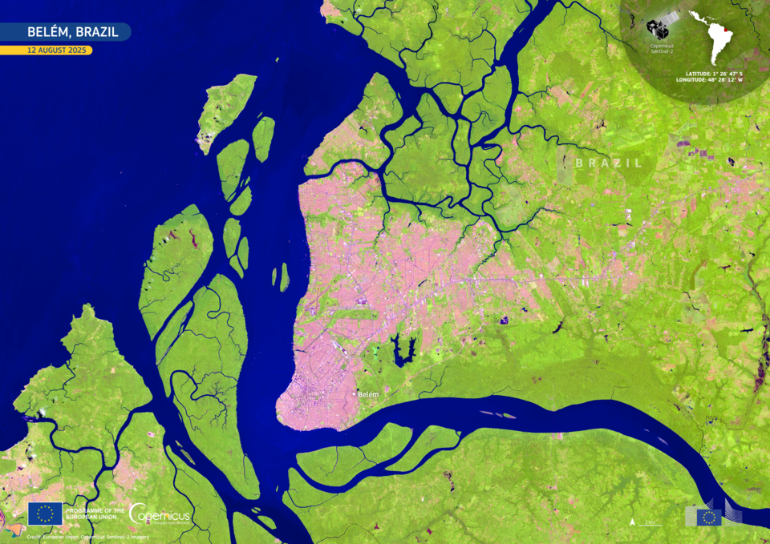

6 Sensoriamento Remoto Aplicado à Paisagem
6.1 Fundamentos do sensoriamento remoto
O sensoriamento remoto é a tecnologia que permite adquirir informações sobre a superfície terrestre sem contato físico, utilizando sensores instalados em plataformas orbitais (satélites), sub-orbitais (aeronaves, VANT) ou terrestres (torres de monitoramento). Na análise da paisagem, o sensoriamento remoto é a principal fonte de dados espaciais, fornecendo imagens que, após processamento e classificação, são convertidas em mapas temáticos de uso e cobertura do solo que servem de insumo para o cálculo de métricas e a modelagem de processos ecológicos.
O princípio físico subjacente é a interação da radiação eletromagnética com a superfície terrestre. Cada tipo de cobertura (vegetação, solo exposto, água, área urbana) apresenta um padrão característico de reflectância espectral, ou seja, a proporção de radiação incidente que é refletida em cada comprimento de onda. A vegetação fotossinteticamente ativa, por exemplo, apresenta alta absorção no vermelho visível (comprimento de onda ~ 0,65 μm), causada pelos pigmentos clorofilianos que capturam energia luminosa para fotossíntese, e alta reflectância no infravermelho próximo (~ 0,85 μm), causada pela estrutura celular do mesofilo que espalha a radiação internamente sem absorvê-la. No infravermelho de ondas curtas (1,6–2,2 μm), a absorção é proporcional ao conteúdo de água da folha, permitindo distinguir vegetação hidratada de vegetação sob estresse hídrico. A Figura 6.1 ilustra essas diferenças para três coberturas contrastantes.
A Figura 6.1 revela o fundamento físico que torna possível a classificação automatizada de coberturas a partir de imagens multiespectrais. O contraste espectral entre vegetação e solo é máximo no infravermelho próximo (NIR), onde a vegetação reflete aproximadamente 50% da radiação incidente enquanto o solo reflete apenas 25%. Esse contraste é a base do índice NDVI, discutido adiante. No comprimento de onda do vermelho (0,65 μm), a vegetação absorve intensamente (reflectância de apenas 4%) enquanto o solo reflete 20%, gerando outro ponto de discriminação. A água, por sua vez, absorve progressivamente toda a radiação a partir do verde, apresentando reflectância próxima a zero no NIR e SWIR, o que a torna facilmente separável de vegetação e solo em qualquer composto de imagem que inclua essas bandas.
Contudo, as assinaturas espectrais não são determinísticas. A reflectância de uma mesma espécie vegetal varia com o estágio fenológico (folhas novas vs. senescentes), o ângulo de observação (efeitos BRDF), as condições atmosféricas (espalhamento de aerossóis), e o estresse ambiental (hídrico, nutricional). Solo exposto apresenta reflectância que varia com o teor de umidade, a cor (matéria orgânica, óxidos de ferro), a rugosidade e a granulometria. Essas fontes de variabilidade espectral explicam por que a classificação de uso e cobertura nunca é perfeita e por que a validação por matriz de confusão é obrigatória.
6.2 Principais sistemas orbitais para análise da paisagem
A escolha do sistema orbital depende da escala da análise, da frequência temporal necessária e da disponibilidade de dados. Para estudos em escala regional (bacias hidrográficas, municípios), os sistemas Landsat (30 m, série contínua desde 1984) e Sentinel-2 (10–20 m, desde 2015) são os mais utilizados, oferecendo séries temporais longas com acesso gratuito e cobertura global. Para análises de dinâmica sazonal em escala continental, o sensor MODIS (250–1.000 m, revisita diária) é preferido pela alta frequência temporal que permite composições livres de nuvens mesmo em regiões tropicais. Para detalhamento local (propriedades rurais, fragmentos individuais, faixas de APP), imagens de alta resolução (Planet, WorldView, CBERS-4A) ou levantamentos por VANT são necessários. A Tabela 6.1 compara os principais sistemas disponíveis.
| Sistema | Resolução espacial | Revisita temporal | Série temporal | Acesso |
|---|---|---|---|---|
| Landsat 5/7/8/9 | 30 m (MS), 15 m (PAN) | 16 dias (8 com 2 satélites) | Desde 1984 | Gratuito |
| Sentinel-2A/2B | 10–20 m | 5 dias (2 satélites) | Desde 2015 | Gratuito |
| MODIS Terra/Aqua | 250–1.000 m | Diária | Desde 2000 | Gratuito |
| Planet (Dove) | 3–5 m | Diária | Desde 2017 | Comercial |
| CBERS-4A | 2–8 m | 31 dias | Desde 2019 | Gratuito |
| WorldView-3 | 0,31 m (PAN), 1,24 m (MS) | 1–3 dias | Desde 2014 | Comercial |
A Tabela 6.1 revela um trade-off fundamental entre resolução espacial e acessibilidade. Os sistemas com acesso gratuito (Landsat, Sentinel-2, MODIS, CBERS) cobrem a maior parte das necessidades de análise da paisagem e possuem séries temporais suficientes para estudos de dinâmica. Os sistemas comerciais (Planet, WorldView) oferecem resolução espacial até 100 vezes superior, mas a um custo que limita sua aplicação a áreas de estudo pequenas ou a projetos com financiamento específico. Para análises de paisagem em escala de bioma ou nacional, a combinação Landsat+Sentinel-2 é o padrão de facto, como demonstrado pelo MapBiomas (que utiliza Landsat 30 m para mapear todo o território brasileiro anualmente desde 1985).
6.3 Índices espectrais
Índices espectrais são combinações algébricas de bandas de reflectância que realçam características específicas da superfície e reduzem a dimensionalidade dos dados. O índice mais utilizado em análise da paisagem é o NDVI (Normalized Difference Vegetation Index), definido como a razão normalizada entre a reflectância no infravermelho próximo e no vermelho.
\[ NDVI = \frac{\rho_{NIR} - \rho_{RED}}{\rho_{NIR} + \rho_{RED}} \]
O NDVI varia teoricamente de −1 a +1. Valores entre 0,2 e 0,8 indicam vegetação com vigor fotossintético crescente. Valores próximos a zero correspondem a solo exposto ou vegetação muito rala, e valores negativos indicam água ou superfícies artificiais. A normalização (divisão pela soma) torna o índice parcialmente insensível a variações de iluminação e de geometria de aquisição, embora efeitos atmosféricos residuais persistam.
Em áreas de vegetação densa (floresta tropical úmida, por exemplo), o NDVI satura, ou seja, atinge valores próximos a 0,8–0,9 sem distinguir diferenças de biomassa ou índice de área foliar acima de certo limiar. O índice EVI (Enhanced Vegetation Index) foi desenvolvido para mitigar essa saturação e incorporar correção atmosférica.
\[ EVI = G \cdot \frac{\rho_{NIR} - \rho_{RED}}{\rho_{NIR} + C_1 \cdot \rho_{RED} - C_2 \cdot \rho_{BLUE} + L} \]
Na equação acima, \(G = 2{,}5\) é o fator de ganho, \(C_1 = 6\) e \(C_2 = 7{,}5\) são coeficientes de correção da influência de aerossóis que utilizam a banda azul como referência, e \(L = 1\) é o fator de ajuste de solo que reduz a influência do substrato em áreas de vegetação esparsa. O EVI é particularmente vantajoso em florestas tropicais densas, onde mantém sensibilidade a variações de biomassa e índice de área foliar que o NDVI não discrimina, e é o índice preferido para análises fenológicas em biomas com alta cobertura vegetal (Amazônia, Mata Atlântica).
Séries temporais de NDVI e EVI permitem capturar a fenologia da vegetação e distinguir formações decíduas de perenifólias pela amplitude da variação sazonal. No Cerrado e na Caatinga, a vegetação decídua apresenta queda acentuada de NDVI na estação seca (amplitude sazonal de 0,3–0,5), enquanto formações perenifólias (matas de galeria, florestas ombrófilas) mantêm NDVI relativamente estável ao longo do ano (amplitude inferior a 0,1). Essa informação fenológica é invaluável para a classificação de fitofisionomias e para a distinção entre pastagem (ciclo fenológico governado pelo manejo) e vegetação nativa (ciclo governado pela chuva). A composição em falsa cor (Fig. Figura 6.2) ilustra como a combinação de bandas espectrais do Sentinel-2 realça feições da paisagem que não são visíveis na composição em cor verdadeira, permitindo discriminar vegetação sadia (tons vermelhos), solo exposto (tons claros) e corpos d’água (tons escuros).

6.4 Pré-processamento
Antes da classificação, as imagens de satélite devem passar por etapas de pré-processamento que assegurem a qualidade radiométrica e geométrica dos dados. A correção atmosférica converte valores de radiância no topo da atmosfera (TOA) em valores de reflectância de superfície (BOA), removendo o efeito de espalhamento Rayleigh, absorção por gases (O₃, H₂O) e difusão por aerossóis. Algoritmos como 6S (Second Simulation of Satellite Signal in the Solar Spectrum), FLAASH e Sen2Cor são amplamente utilizados. A correção atmosférica é essencial para análises multitemporais, pois sem ela, variações atmosféricas entre datas diferentes seriam confundidas com mudanças reais na superfície.
A correção geométrica assegura que cada pixel corresponda à posição geográfica correta, utilizando pontos de controle terrestres e modelos digitais de elevação para ortoretificação (remoção de distorções topográficas). Imagens Landsat e Sentinel-2 distribuídas pelas agências espaciais já são entregues com georreferenciamento sub-pixel (RMSE < 12 m), dispensando correção adicional na maioria das aplicações.
A composição temporal seleciona, para cada pixel num período definido (mensal, trimestral, anual), o valor com menor contaminação por nuvens, sombras ou aerossóis, gerando mosaicos livres de artefatos. Algoritmos de composição (mediana, melhor observação disponível, composição por decêndio ou por quartil) são peça-chave para viabilizar análises em regiões com nebulosidade persistente.
ImportanteNebulosidade em regiões tropicais
Em regiões de floresta tropical úmida, como a Amazônia Oriental e a Zona da Mata do Nordeste, a nebulosidade persistente durante a estação chuvosa (4–6 meses) pode inviabilizar a obtenção de imagens ópticas livres de nuvens. Nesses casos, dados de radar (Sentinel-1 SAR), que penetram nuvens, e composições temporais com janelas amplas (trimestrais ou semestrais) são estratégias complementares indispensáveis.
6.5 Séries temporais e fenologia
A disponibilidade de séries temporais longas (Landsat, desde 1984, totalizando mais de 40 anos) e de revisita frequente (Sentinel-2, 5 dias, e Planet, diária) transformou a análise da paisagem de uma disciplina baseada em instantâneos para uma ciência de trajetórias temporais. Plataformas como Google Earth Engine e MapBiomas processam séries temporais de centenas de milhares de imagens para gerar mapas anuais de uso e cobertura que revelam não apenas o estado atual da paisagem, mas toda sua história de transformação ao longo de décadas.
A análise fenológica, baseada em perfis temporais de NDVI ou EVI compostos mensalmente ou por decêndio, permite identificar cultivos agrícolas pela data de plantio e colheita (safrinha vs. safra principal, soja vs. milho segunda safra), distinguir pastagem manejada de vegetação nativa pela amplitude e temporalidade da variação sazonal, e detectar degradação florestal gradual pela redução progressiva dos valores de NDVI ao longo de anos consecutivos. Essas capacidades são fundamentais para a detecção de mudanças na paisagem, tema aprofundado no Capítulo 11.
A análise de tendências em séries longas de NDVI (Mann-Kendall, regressão linear pixel-a-pixel) permite identificar áreas em processo de greening (aumento progressivo de biomassa, tipicamente associado a regeneração secundária ou intensificação agrícola) e de browning (redução progressiva de biomassa, associada a degradação, seca prolongada ou mudanças climáticas). No Sahel, na Caatinga e em partes do Cerrado, tendências de browning em séries MODIS de 20+ anos têm sido associadas à desertificação e ao estresse hídrico crônico, enquanto tendências de greening na Amazônia desflorestada refletem o estabelecimento de pastagens e cultivos de alta produtividade.
6.6 Sensoriamento remoto ativo
Enquanto os sensores discutidos nas seções anteriores (Landsat, Sentinel-2, MODIS) são passivos (medem a radiação solar refletida pela superfície), sensores ativos emitem sua própria energia e medem o sinal que retorna após interação com o alvo. As duas principais tecnologias ativas relevantes para a análise da paisagem são o radar de abertura sintética (SAR) e o LiDAR.
Sensores SAR, presentes nos satélites Sentinel-1 (banda C, λ = 5,6 cm) e ALOS-2 PALSAR-2 (banda L, λ = 23 cm), emitem pulsos de micro-ondas e medem a intensidade e a fase do sinal retornado (retroespalhamento). A intensidade do retroespalhamento depende da rugosidade da superfície, do conteúdo de umidade e da estrutura da vegetação. A banda L (23 cm) penetra parcialmente no dossel e interage com troncos e galhos grossos, sendo sensível à biomassa florestal e capaz de distinguir floresta de não-floresta mesmo sob cobertura de nuvens. A banda C (5,6 cm) interage predominantemente com folhas e ramos finos do dossel superior, sendo menos sensível à biomassa mas mais sensível à umidade superficial do solo em áreas descobertas.
O LiDAR (Light Detection and Ranging), embarcado em aeronaves (LiDAR aerotransportado) ou satélites (GEDI, ICESat-2), emite pulsos laser e mede o tempo de retorno para calcular a distância vertical entre o sensor e a superfície, gerando modelos tridimensionais do dossel florestal. A altura do dossel derivada de LiDAR é um indicador robusto de biomassa acima do solo e de estágio de sucessão ecológica, informação complementar à classificação espectral bidimensional que diferencia floresta primária de secundária apenas pela textura e resposta espectral. Para análises de paisagem em escala local, levantamentos LiDAR aerotransportados fornecem modelos digitais de elevação (MDE) e de superfície (MDS) com resolução centimétrica, úteis para a delimitação precisa de drenagem, a modelagem hidrológica de detalhe e a identificação de feições geomorfológicas que condicionam a distribuição de habitats.